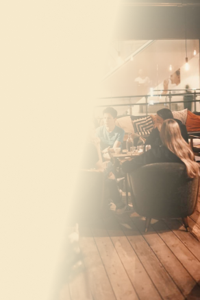
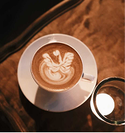
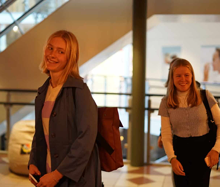

Café UNO er en ungdomskafe i hjertet av Hamar sentrum, på torghjørnet. UNO ønsker å være en stue midt i byen, et sted ungdom kan komme og være akkurat som man er.
Hvem er vi?
UNO har en kaffebar med god kvalitet til snille priser. Her får man kjøpt noe godt å drikke, både varmt og kaldt, og noe enkel mat å spise. Man kan sitte så lenge du vil, og det ingen kjøpeplikt, nettopp fordi UNO er en stue.
Kvalitet
Cafe UNO er en selvstendig stiftelse som drives hovedsaklig av frivillige og er avhengig av økonomisk støtte.

Alene eller sammen med venner, vil UNO at du skal vite du er velkommen uansett.

Om oss